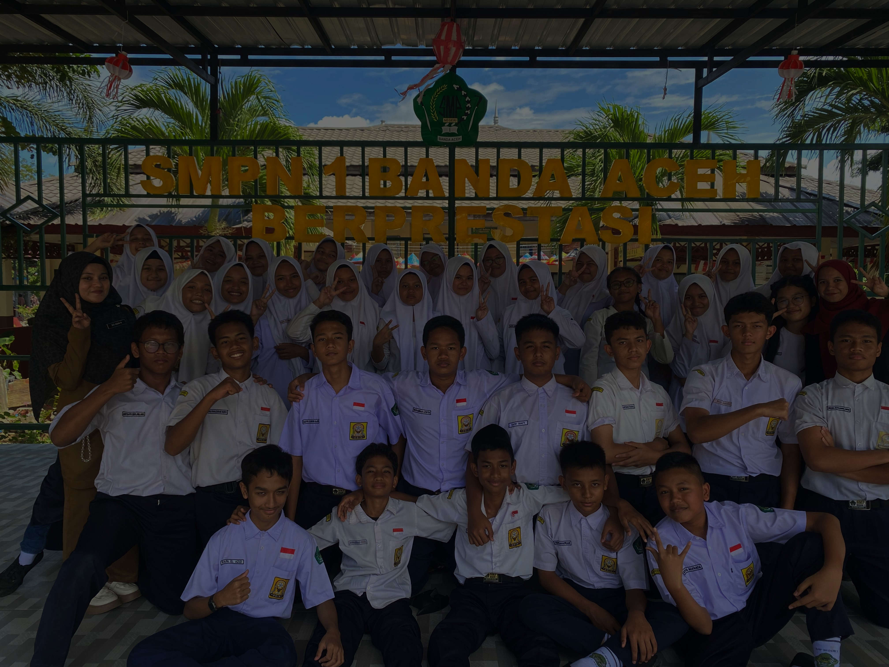

Prestasi Kami, Kelas 8-1
Raih lebih banyak prestasi bersama kami.
Raih lebih banyak prestasi bersama kami.
Aceh dikenal sebagai negeri seribu warung kopi. Banyaknya warung kopi meningkatkan jumlah limbah ampas kopi yang dibuang begitu saja. Limbah ini menghasilkan gas metana yang berkontribusi terhadap peningkatan emisi yang cukup besar. Tidak hanya limbah kopi, limbah kelapa dan tebu juga turut menyumbang pencemaran udara dan lingkungan. Briket ramah lingkungan hadir sebagai solusi alternatif mengatasi masalah tersebut dengan memanfaatkan limbah organik dari ampas kopi, sabut kelapa, dan ampas tebu menjadi sesuatu yang bernilai guna. Briket ini memiliki ketahanan panas yang lama serta kemampuan untuk mengurangi emisi karbon monoksida.